Story Telling
EMSE 4572/6572: Exploratory Data Analysis
John Paul Helveston
December 02, 2026
Week 15: Story Telling
1. Telling a story
2. Designing slides
3. Giving a talk
4. “Final” thoughts
Download this cheetsheet for today’s content
Week 15: Story Telling
1. Telling a story
2. Designing slides
3. Giving a talk
4. “Final” thoughts
What is a story?
A story is a set of observations, facts, or events…that are presented in a specific order such that they create an
emotional reaction in the audience.
- Clause O. Wilke (2019), Chp. 29
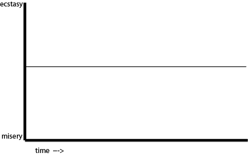
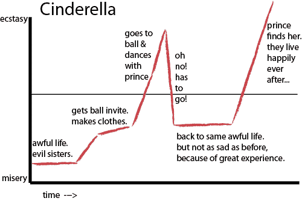
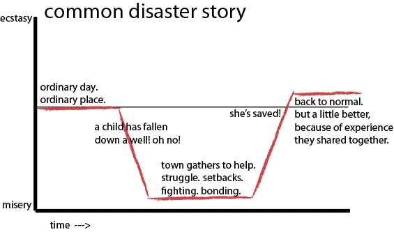
Freytag’s Pyramid
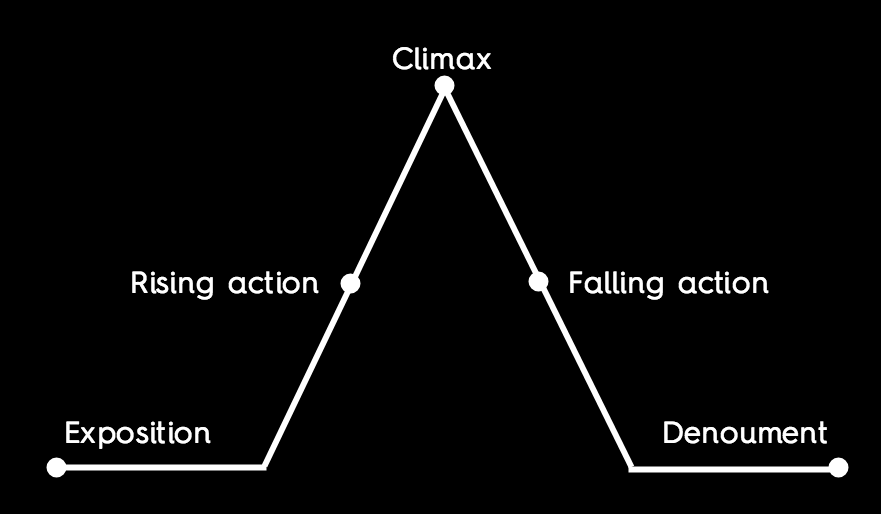
Freytag’s Pyramid: King Kong
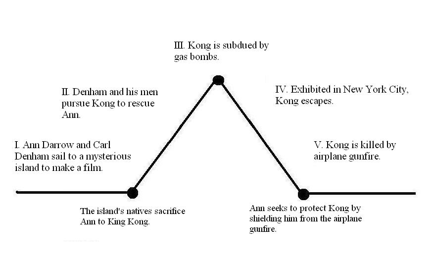
Freytag’s Pyramid: Research Project
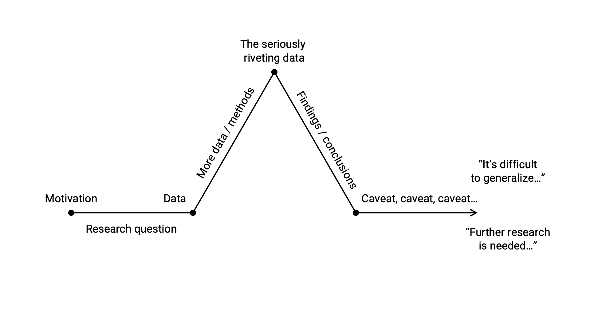
Freytag’s Pyramid: Research Project
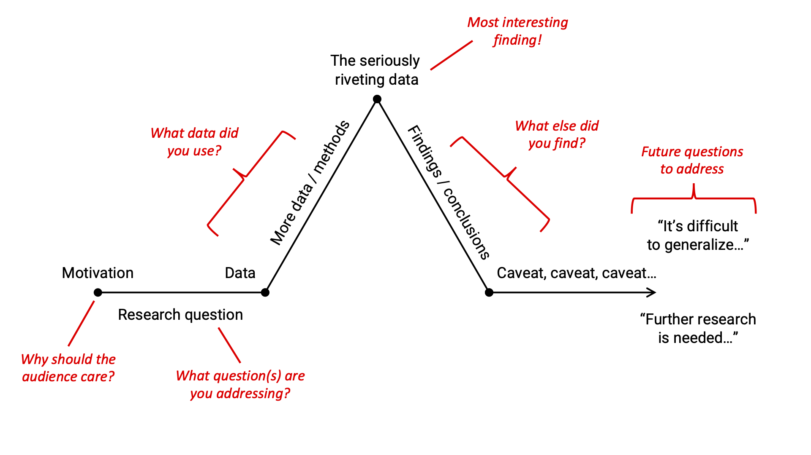
“A single (static) visualization will rarely tell an entire story”
- Clause O. Wilke (2019), Chp. 29
Freytag’s Pyramid: Research Project
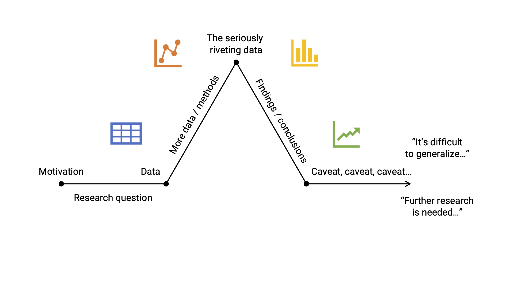
Use layers to build tension / provide context
. . .
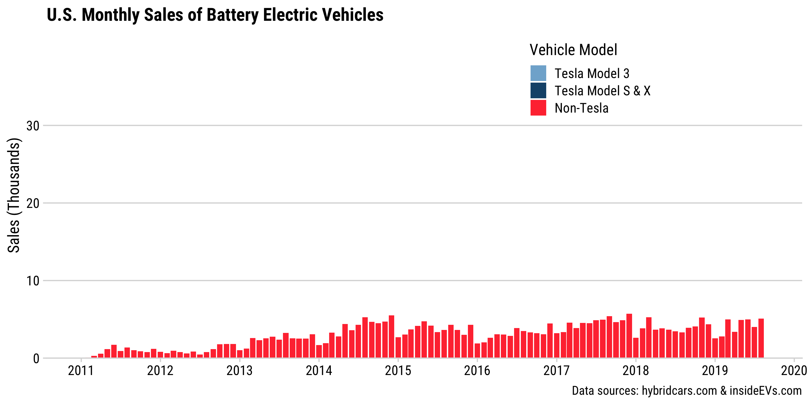
Use layers to build tension / provide context
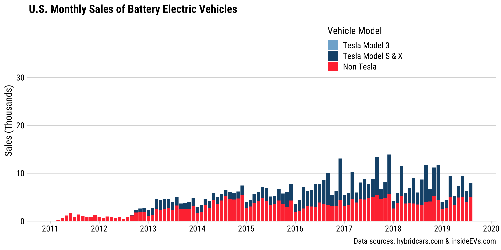
Use layers to build tension / provide context
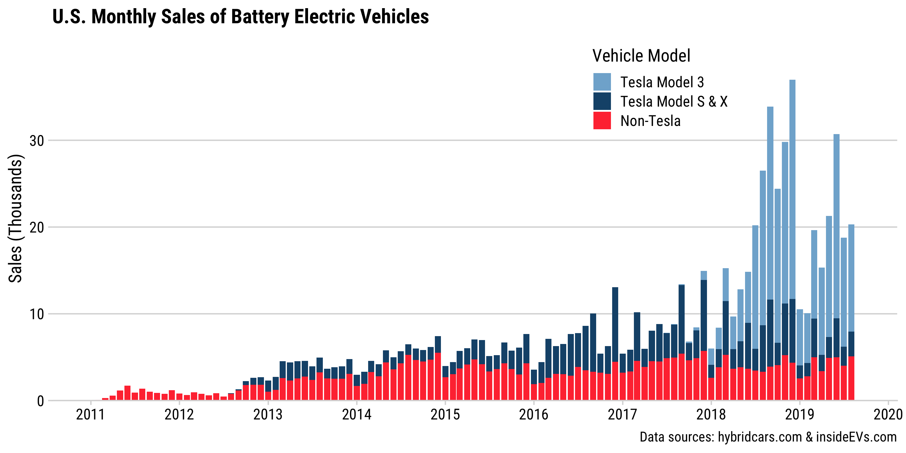
Use animation to build tension / provide context
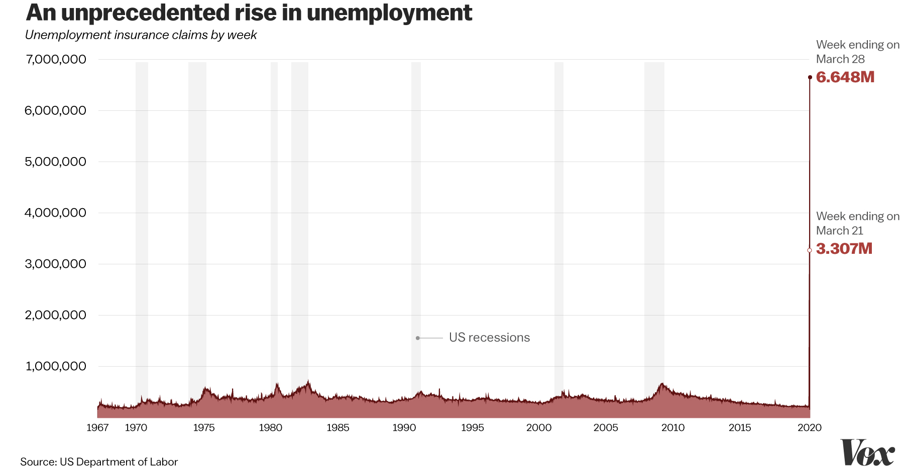
Use animation to build tension / provide context

Make charts for the generals
(i.e. keep it simple)
. . .
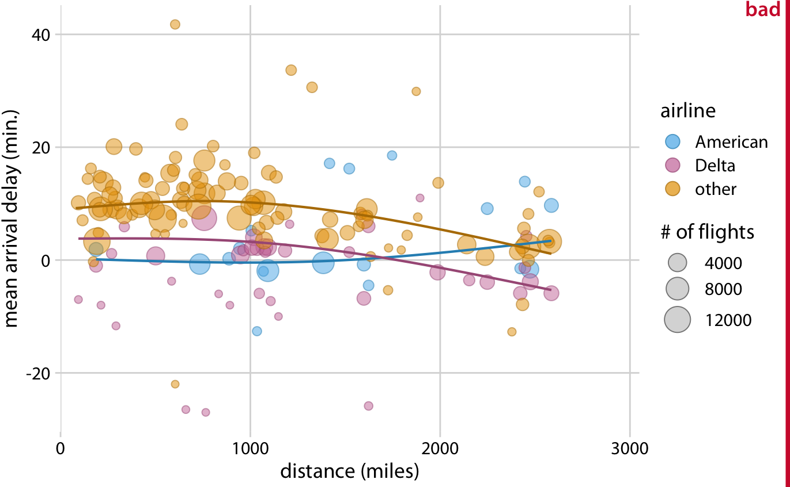
Make charts for the generals
(i.e. keep it simple)
Build up towards complex figures
. . .
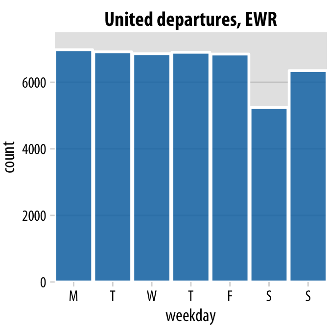
Build up towards complex figures
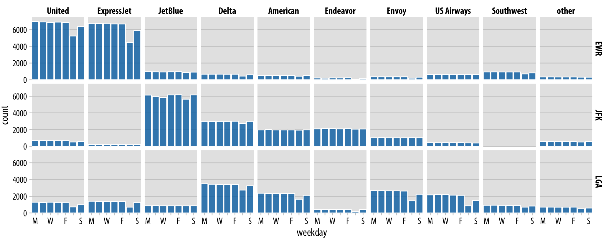
Be consistent, but don’t be repetitive
Week 15: Story Telling
1. Telling a story
2. Designing slides
3. Giving a talk
4. “Final” thoughts
Hitchcock’s rule
Hitchcock’s rule
The size of any object in your frame should be proportional to its importance to the story at that moment
Watch this example
Hitchcock’s rule
The size of any object in your
frameslide should be proportional to its importance to the story at that moment
…and finally you will read this
You will read this first
and then you will read this
Put main point at top and use big font size!
(see Stephanie Evergreen’s blog post “So What?”)
Except for Tesla, EV adoption in the U.S. is flat
Tesla’s Model 3 is a Game Changer for EVs
40pt font for titles
24pt font for all other text
(Exception: footer text can be small)
Footer text
Think of fonts as pre-attentive attributes
. . .
San-serif fonts for most text
“Italic, serif fonts for quotes”
- Prof. Helveston
Consider using a light-colored background
(tan / gray)
Use high contrast between font and background color
Dark text on a light background works well
Light text on a dark background also works well
Use high contrast between font and background color
Yellow text on a white background is horrible
Blue text on a black background is horrible
Use high contrast between font and background color

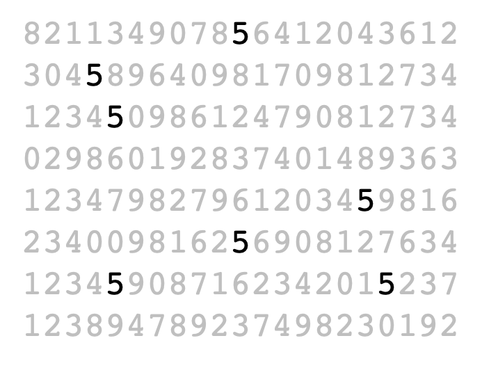
Avoid fonts like
Comic Sans
Papyrus
They make your work look amateurish
1 slide, 1 idea
Break up main points into multiple slides
Number your slides!
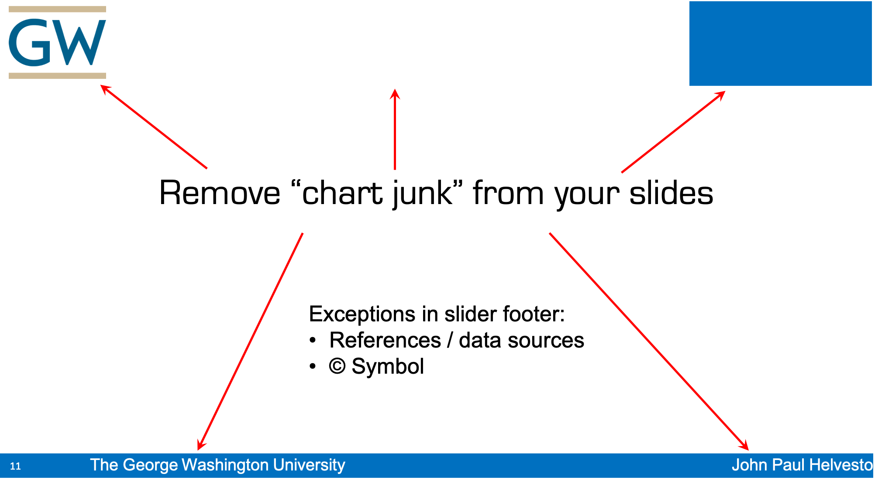
Example of an acceptable slide footer
↓
Data source: http://somesourceofdata.com © John Paul Helveston, GWU, Apr. 2021
If you are in person, consider using handouts
(1-2 pages)
Week 15: Story Telling
1. Telling a story
2. Designing slides
3. Giving a talk
4. “Final” thoughts
What are the first words
you should say in a speech?
. . .
Watch this video to find out
How to start a speech
. . .
3. With a question that matters to the audience (“Have you ever…?”)
. . .
2. With a shocking factoid (“There are more people alive today than have ever lived…”).
. . .
1. Tell a story, talk about people (“Imagine…”)
. . .
- With a question that matters to the audience:
“What’s the current federal subsidy for buying an electric car in the US?”
. . .
- With a shocking factoid
“50% of the world’s EVs are made by Chinese automakers”
. . .
- Tell a story, talk about people
“Whenever I talk with people about electric cars, they usually ask about Tesla…”
Your turn
Brainstorm different strategies for how to start your presentation for your projects:
- Tell a story, talk about people (“Imagine…”).
- With a shocking factoid (“There are more people alive today than have ever lived…”).
- With a question that matters to the audience (“Have you…?”).
Afterwards, we will go around the room and one person from each team will practice giving their start to their presentation.
Week 15: Story Telling
1. Telling a story
2. Designing slides
3. Giving a talk
4. “Final” thoughts
Final Reports due 12/06
(You have 4 days left!)
. . .
Read prompt carefully
. . .
Be sure to include a copy of the data you’re using
. . .
Use a theme ✨
. . .
Check for spelling errors:
Final Presentations (Slides Due 12/08)
We’ll watch these during class period on Dec 11
10 mins each
At the end, we’ll announce awards:
🗑️ Janitor Award: For most intense wrangling of messy data
✨ Shiny Award: For single most impressive visualization
Final Interviews (12/07 - 12/08)
Schedule for a 10-minute interview using this link
. . .
Suggestions (from Prof. Mazzuchi):
- Bring water to drink - it will calm you when you are nervous and your mouth dries up. You can also pause and think while you drink.
- Don’t answer right away - think a bit.
- Answer the question asked. Don’t try to impress or I will ask more questions.
- Don’t say “I don’t know.” Try and I will help you.